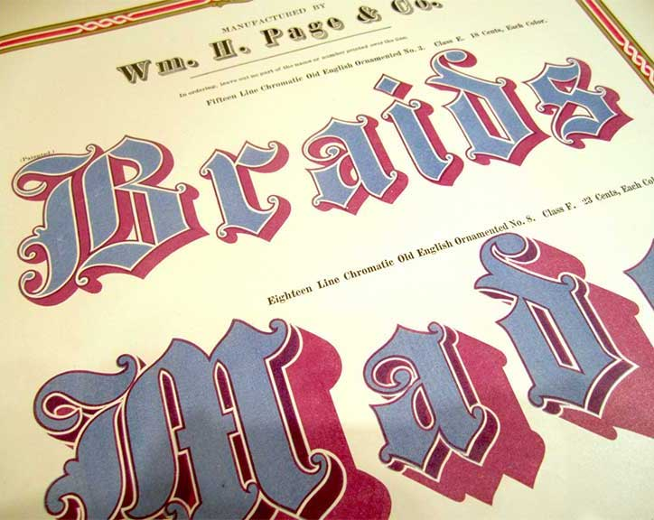

Color fonts or chromatic type are not new. The first production types appeared in the 1840s, reaching a peak of precision and complexity a few decades later as efficiencies in printing enabled greater creative freedom. In 1874 William H. Page of Greeneville, Connecticut, published his 100-page Specimens of Chromatic Type & Borders that still has the power to mesmerize designers today.

Chromatic effects are achieved by stacking two or more corresponding type styles on top of one another in different colors. Each style has cut-away areas to reveal or overlap the color of the style beneath.
The use of chromatic type declined in the 20th century, due to technical reform and changing fashions but advances in digital technology over the last few years have enabled easier production and wider support for chromatic typefaces. This has led to a resurgence of chromatic designs that have steadily appeared in bestseller charts, award lists and have been picked for a variety of decorative titles and logos.